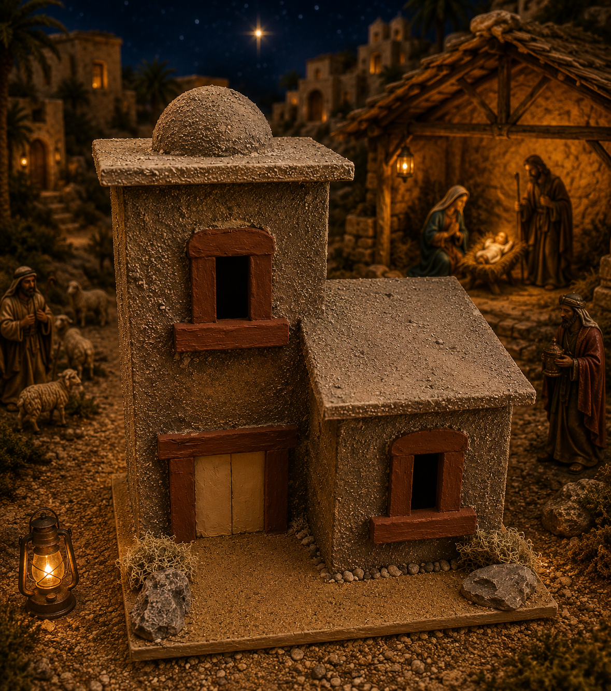

Galería · Pieza 09
Casa rústica · Noche de Navidad
Casa de tonos piedra con detalles rojizos, incorporada a un pesebre nocturno con establo iluminado, pastores, ovejas y la estrella de Belén.

Casa de tonos piedra con detalles rojizos, incorporada a un pesebre nocturno con establo iluminado, pastores, ovejas y la estrella de Belén.
